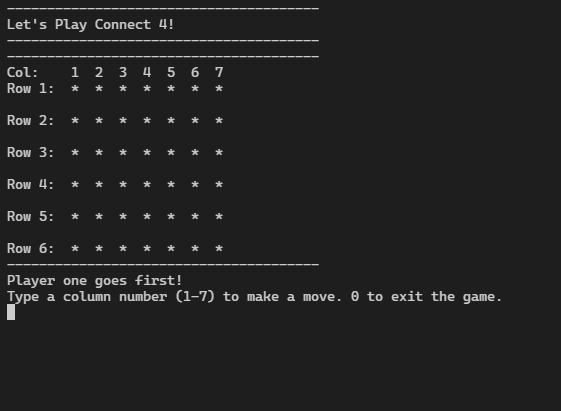
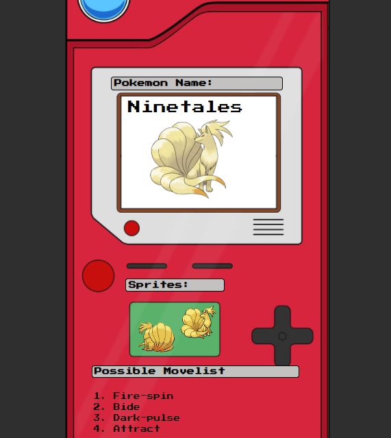
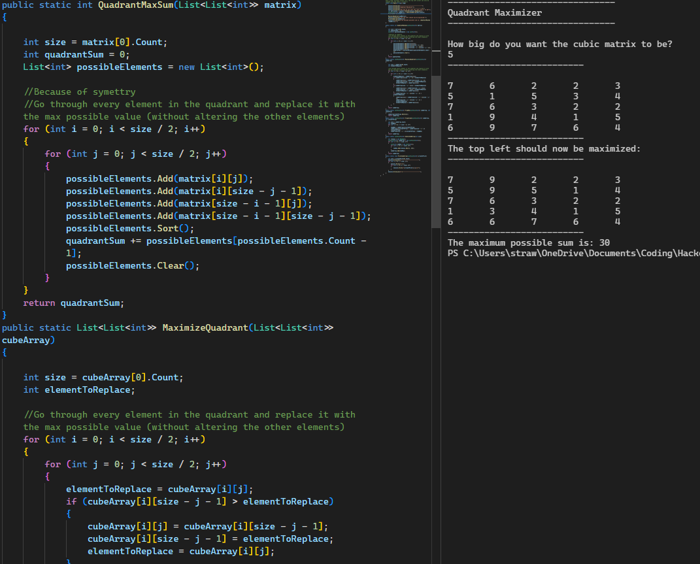
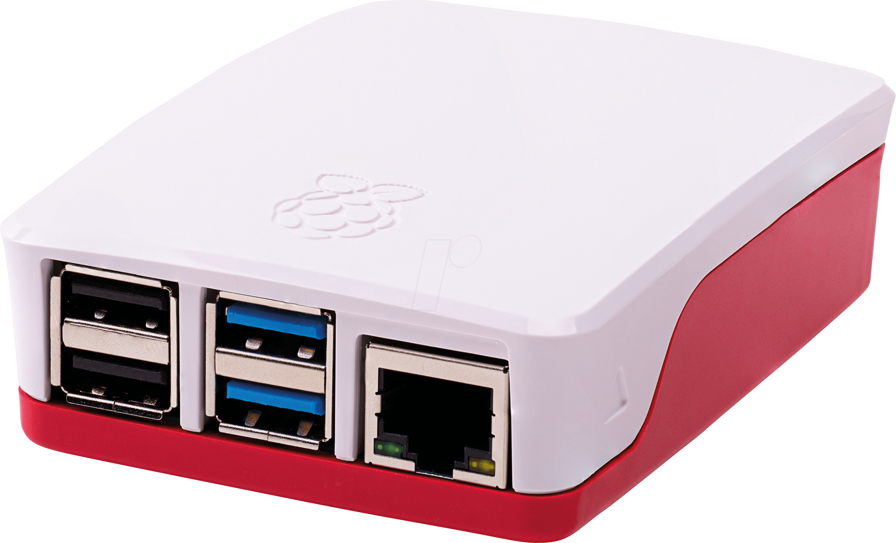

Portfolio();
Here are some of my Personal Projects:

Connect 4
A text-based console application of Connect 4. (Based on a CodeWars algorithm exercise)

Pokédex
A basic web app that communicates with PokéAPI to retrieve sprite images and an example move set.

Algorithms and Problem Solving
A plethora of solutions for various HackerRank and CodeWars challenges.

Raspberry Pi Auto Input Selector
A bash script that automatically switches between a built-in display and an HDMI input. (Used for a homebrewed RetroPi console.